Analiza rješenja · JOI Spring Camp 2018 · Dan 3
Sigurnosna vrata
O ovom članku
Tekst je prijevod službene japanske prezentacije rješenja, preoblikovan u članak. Slajdovi su ugrađeni kao slike; natpis pod svakim slajdom je prijevod teksta na njemu. Dijelovi označeni kao trenerska napomena nisu u izvornoj prezentaciji — dodani su da popune korake koje slajdovi preskaču ili samo skiciraju.
Slajdovi
Zadatak
izvorni slajdovi 1–2
-
1Naslov; autor maroon. -
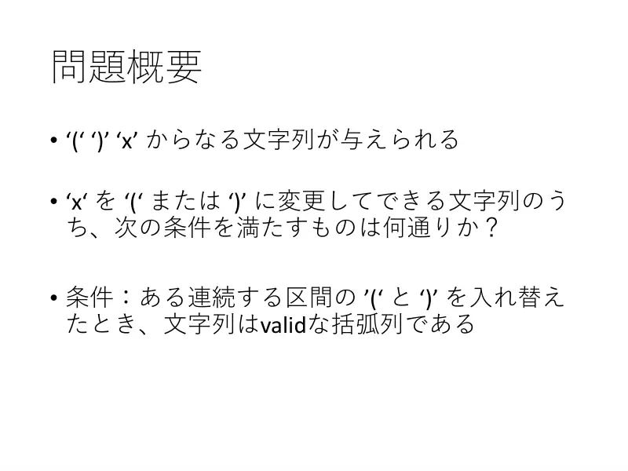
2Zamijeni xtako da postoji segment čije invertiranje daje valjan zagradni niz; prebroji.
← → tipke ili klik na sliku
Podzadaci 1–3 30 bodova
Koraci algoritma
Nabrajanje i provjera
izvorni slajdovi 3–8
-
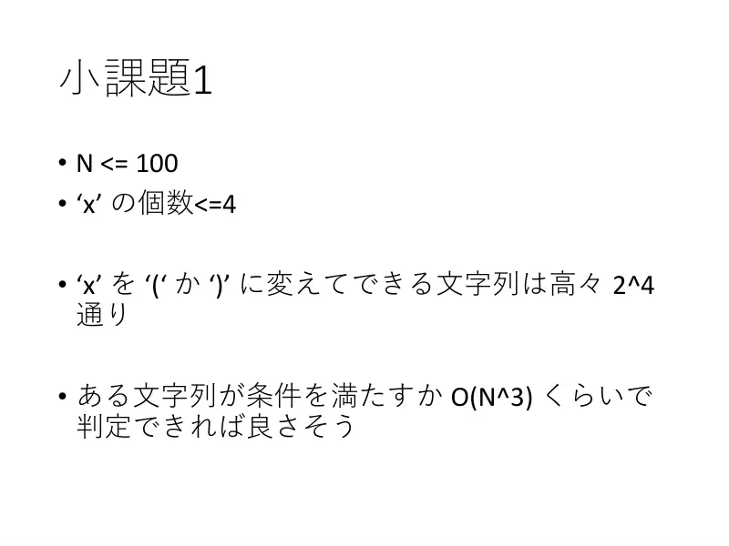
3$\le4$ x: $2^4$ nizova; treba provjera u $O(N^3)$. -
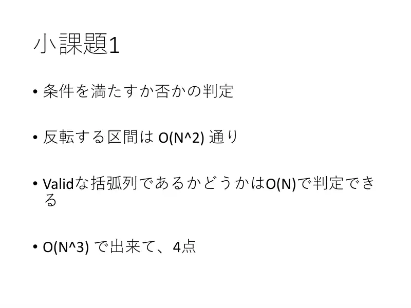
4$O(N^2)$ segmenata × $O(N)$ provjera valjanosti: 4 boda. -
5$\le12$ x: $2^{12}$ nizova; treba $O(N^2)$. -
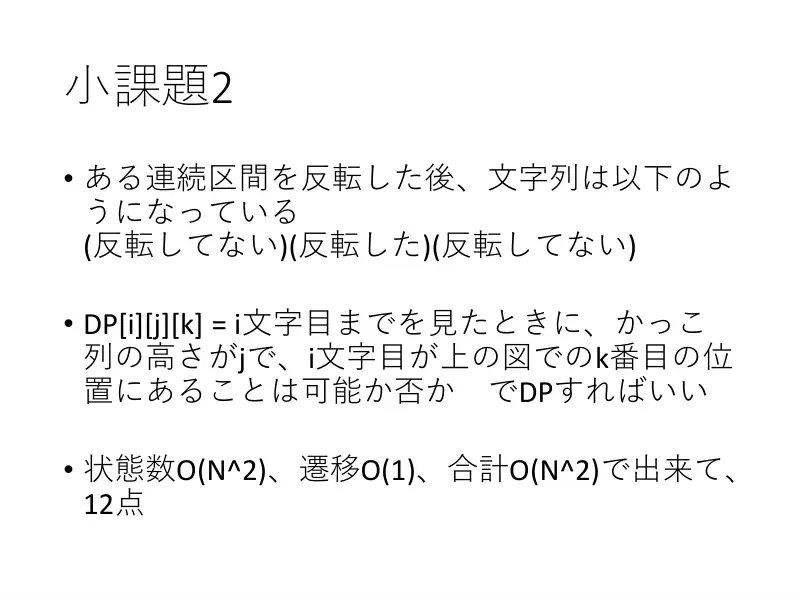
6Nakon invertiranja niz = (neinvertiran)(invertiran)(neinvertiran). DP$[i][j][k]$: pozicija $i$, visina $j$, dio $k$ — moguće? $O(N^2)$ stanja, $O(1)$ prijelaz: 12 bodova. -
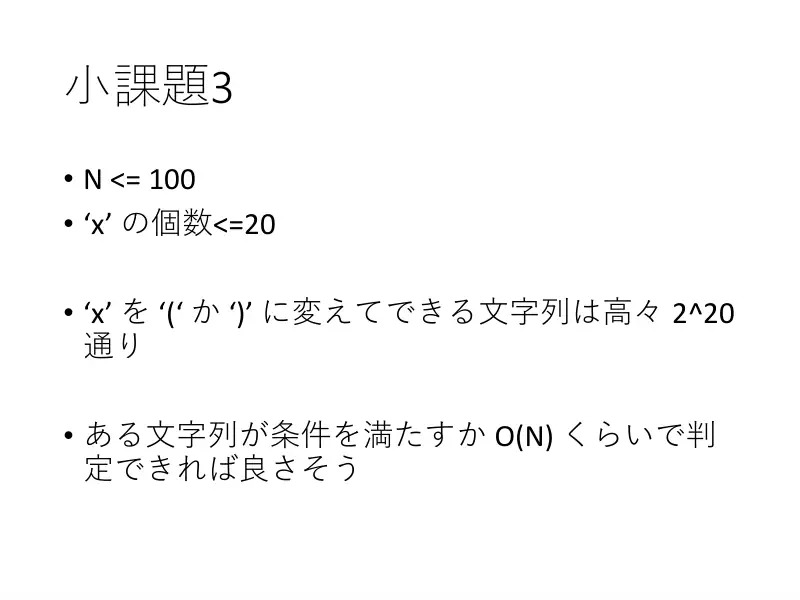
7$\le20$ x: $2^{20}$ nizova; treba $O(N)$. -
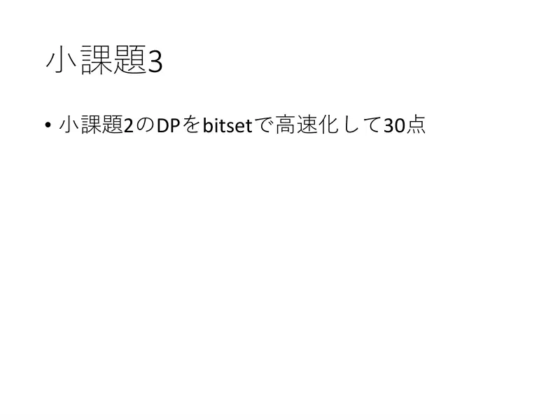
8Bitset ubrzanje DP-a: 30 bodova.
← → tipke ili klik na sliku
Karakterizacija u $O(N)$
Koraci algoritma
Tri slučaja i kanonski segment
izvorni slajdovi 9–13
-
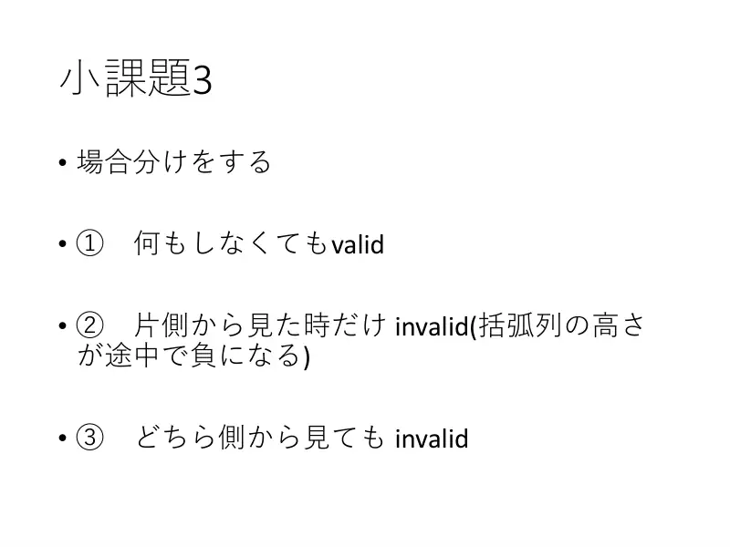
9Slučajevi: ① već valjan; ② nevaljan samo s jedne strane (visina postane negativna samo gledano s jedne strane); ③ s obje. -
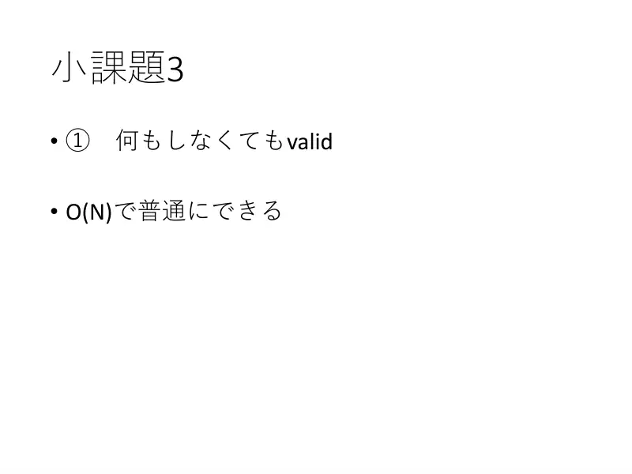
10① provjera u $O(N)$. -
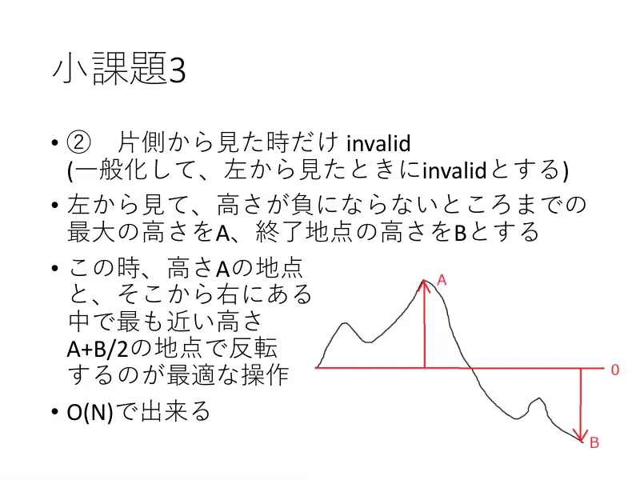
11② (bez smanjenja općenitosti, nevaljan s lijeva): $A$ = maksimum visine dok visina ne postane negativna, $B$ = krajnja visina. Optimalno: invertiraj od točke visine $A$ do najbliže točke desno visine $A+B/2$. $O(N)$. -
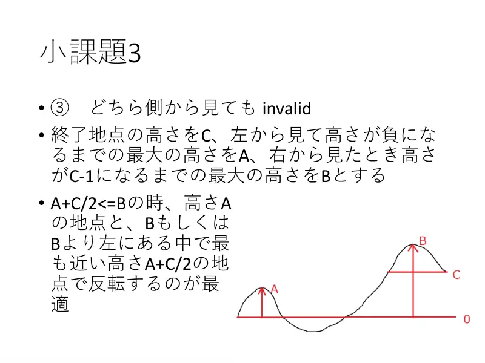
12③: $C$ = krajnja visina, $A$ = maksimum s lijeva do negativnog, $B$ = maksimum s desna dok visina ne padne na $C-1$. Ako $A+C/2\le B$: invertiraj od točke $A$ do najbliže točke visine $A+C/2$ u ili lijevo od $B$. -
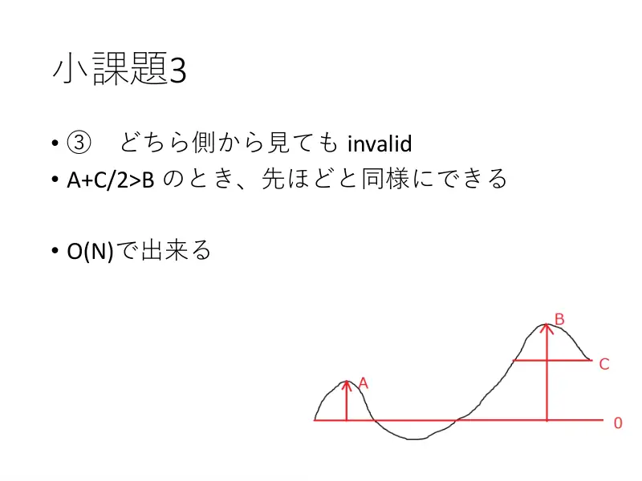
13Ako $A+C/2\gt B$: simetrično (obrni). $O(N)$.
← → tipke ili klik na sliku
Podzadatak 4: $O(N^4)$ 73 boda
Koraci algoritma
DP za fiksne parametre
izvorni slajdovi 14–18
-
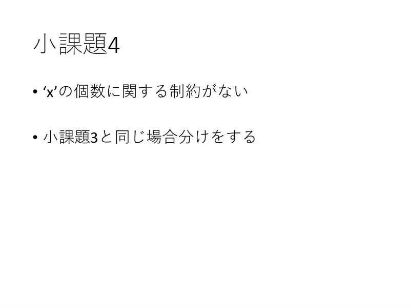
14Bez ograničenja na broj x; ista podjela slučajeva. -
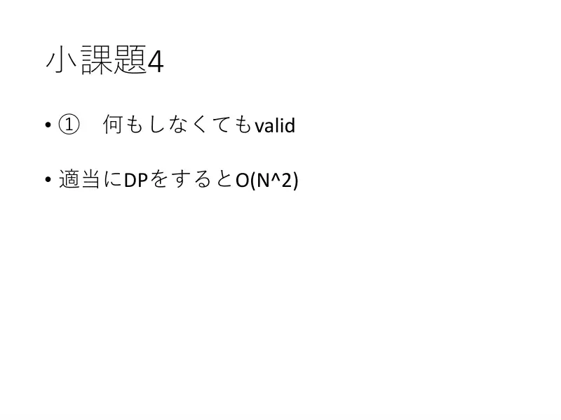
15① DP $O(N^2)$. -
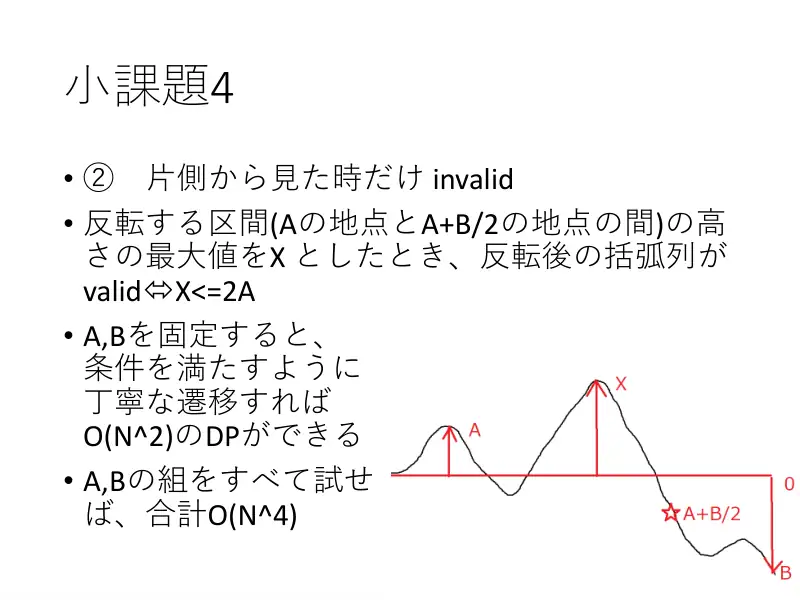
16② Neka je $X$ maksimum visine na segmentu (između točke $A$ i točke $A+B/2$): valjan ⇔ $X\le2A$. Fiksiraj $(A,B)$; pažljiv DP $O(N^2)$; svi parovi: $O(N^4)$. -
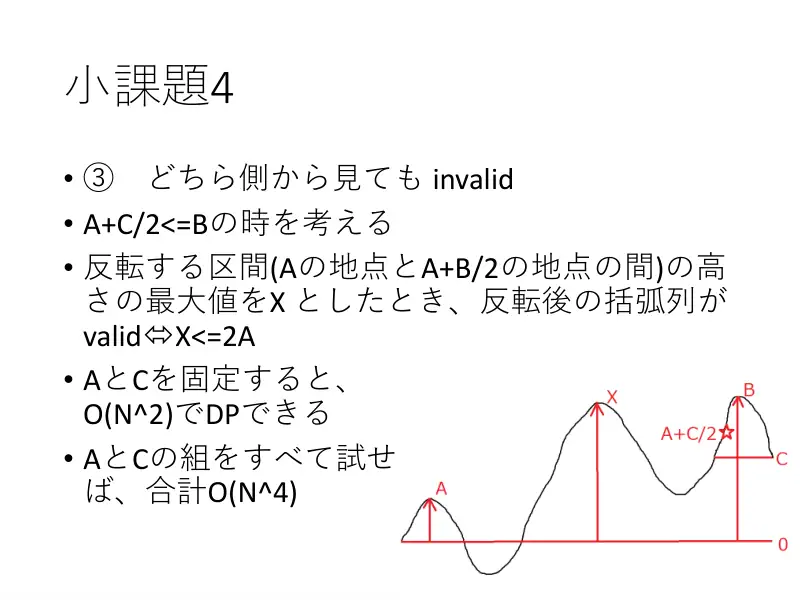
17③, $A+C/2\le B$: isto s $X\le2A$; fiksiraj $(A,C)$, DP $O(N^2)$; ukupno $O(N^4)$. -
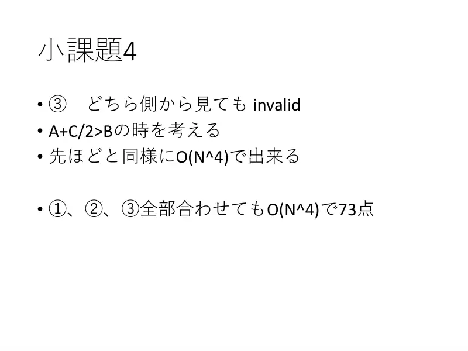
18③, $A+C/2\gt B$: simetrično. Sve zajedno $O(N^4)$: 73 boda.
← → tipke ili klik na sliku
Puno rješenje: $O(N^3)$ 100 bodova
Koraci algoritma
Pivot i spajanje dvaju DP-ova
izvorni slajdovi 19–23
-
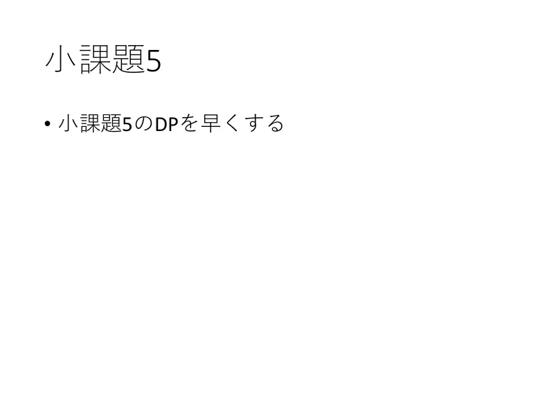
19Ubrzaj DP iz podzadatka 4. -
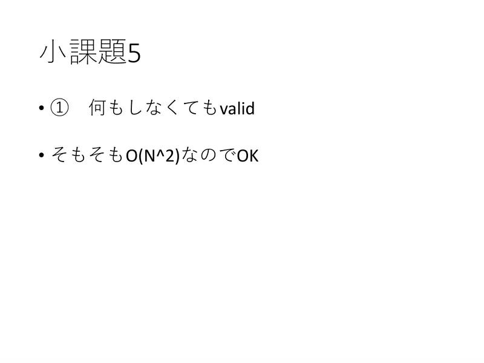
20① već $O(N^2)$. -
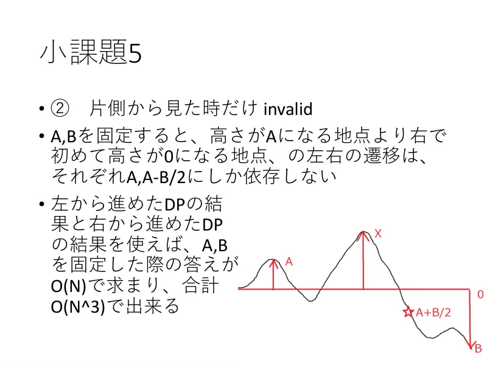
21② Fiksiraj $(A,B)$: prijelazi lijevo od pivota (prva točka visine 0 desno od točke $A$) ovise samo o $A$, desno samo o $A-B/2$. S DP-om s lijeva i DP-om s desna odgovor za $(A,B)$ u $O(N)$; ukupno $O(N^3)$. -
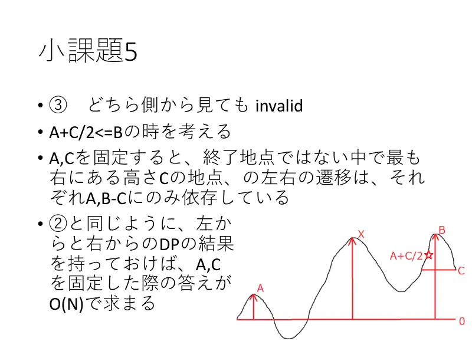
22③, $A+C/2\le B$: fiksiraj $(A,C)$; pivot = najdesnija točka visine $C$ osim kraja; lijevo ovisi o $A$, desno o $B-C$; $O(N)$ po paru. -
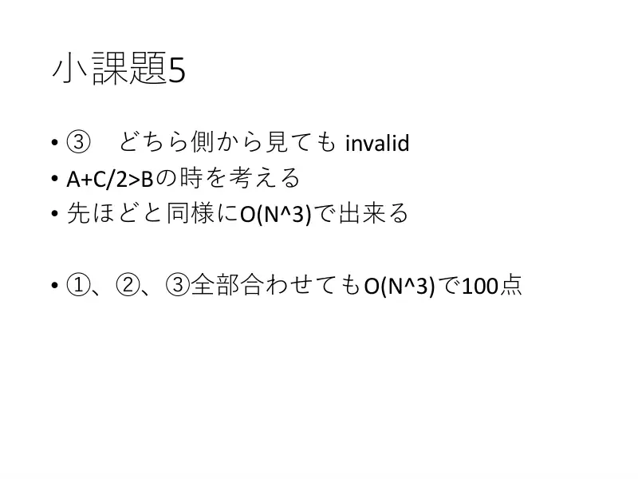
23③, $A+C/2\gt B$: simetrično. Sve $O(N^3)$: 100 bodova.
← → tipke ili klik na sliku
Slajd
Statistika
izvorni slajd 24
-
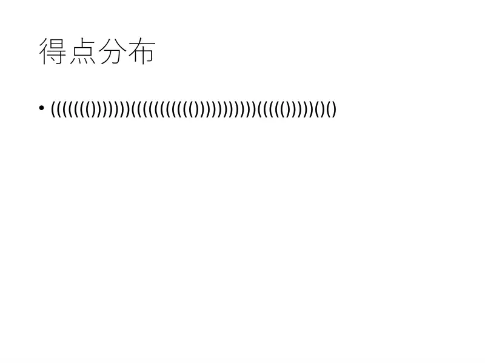
24Raspodjela bodova prikazana kao zagradni niz.
Sažetak
- Invertiranje = zrcaljenje visine; 4 uvjeta valjanosti.
- Tri disjunktna slučaja; kanonski segment (vrh $A$, prva točka $A+C/2$) određen nizom → nema dvostrukog brojanja.
- DP po fazama za fiksne parametre; pivot razdvaja ovisnosti → $O(N^3)$.